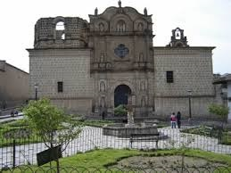
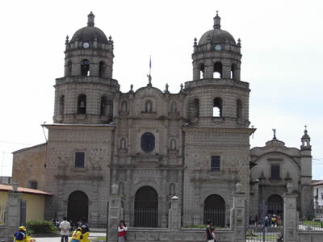
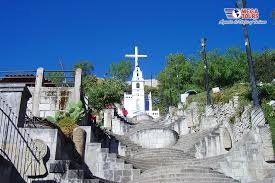
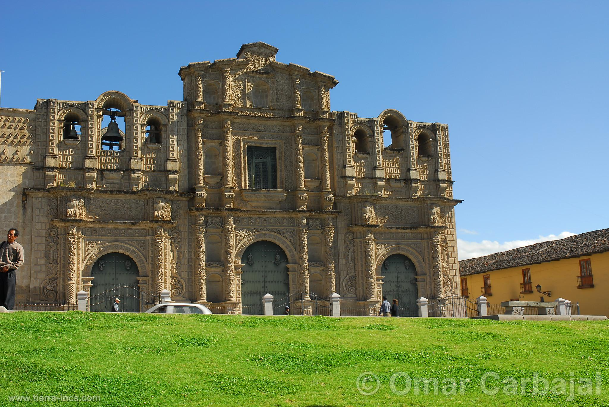
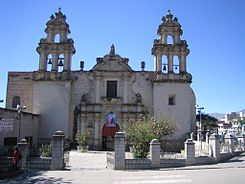
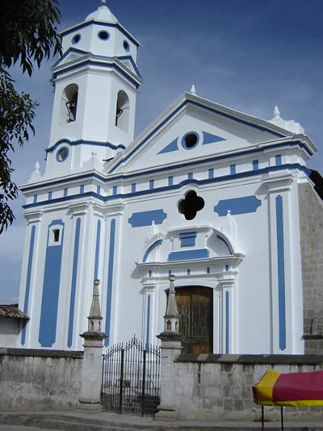

Escuela Acádemico Profesional de Ingeniería de Sistemas de la UNC
Cajamarca es una localidad andina situada en la región montañosa del norte de Perú. La céntrica Plaza está rodeada de edificios de aruitectura colonial barroca. La catedral de Cajamarca cuenta con un altar recubierto de pan de oro, mientras que en el monasterio de San Francisco alberga una catacumbas y un museo de arte religioso. El Cuarto del rescate es el ugar donde recluyeron Atahualpa, el último emperador de los incas.
| IGLESIAS - CAJAMARCA | Nombre: | Imagen: | Descripción: |
|---|---|---|
| Iglesia Belén |  |
Se encuentra ubicada entre los jirones Belén y Junín, su construcción se realizó a base de piedra de cantería tallada artesanalmente, durante el Siglo XVIII. Consta de una sola nave, es la iglesia más representativa del arte barroco colonial y la más bella muestra arquitectónica de la ciudad. |
| Convento de San Francisco |  |
Este majestuoso templo está ubicado al sur este de la plaza de armas y rodeado de los jirones Amalia Puga, Dos de Mayo, Amazonas y Belén. Este convento fue diseñado por el arquitecto Matías Pérez Palomino y su construcción duro hasta el siglo XVIII. La fachada del convento tiene 3 puertas que son la entrada al templo, el estilo de las columnas del convento son de barroco plateresca. |
| Cerro Santa Apolonia |  |
Se ubica al lado Oese del valle y de la ciudad de Cajamarca. El cerro de Santa Apolonia antes se le conocía con el nombre de Rumi Tiana o "Asiento de piedra". Este lugar se a mantenido por muchos siglos como un lugar sagrado exclusivo para la adoración. |
| Caterdral de Cajamarca |  |
También conocida como Catedral de Santa Catalina. Es la principal catedral Barroco en la ciudad homónima. Está bajo propiedad de la iglesia católica, y fue declarada como Patrimonio Histórico Cultural de la Nación del Perú en 1972. Su fachada es de estilo barroco, trabajada integramente en piedra volcánica, respresenta tres entradas que corresponden a las 3 naves: Santa Catalina, la mayor y cenral; san Juan Bautista a la izquierda y la del perdón a la derecha. |
| Convento la Recoleta |  |
Ubicada en la intersección de los Héroes y el Maestro. Fue construida en el siglo XVII. Se caracteriza por su construcción en piedra y ladrillo de arcilla. La portada representa un retablo plateresco neoclásico. La parte interior es de una sol nave y con tres altares. En el complejo de la recoleta funcionaba el convento de Recolección Franciscana. Actualmente funciona como el clegio de San Ramón, el jardín Santa Teresita y la escuela Beléen. |
| Iglesia de La Concepción |  |
La Iglesia de las monjas se encuentra ubicada en la intersección de los jirones de Amalia Puga y Guillermo Urrelo. Está totalmente construida en piedra volcánica, es sin embargo, de un estilo arquitectónico muy simple y sobrio - neoclasico. |
| LUGARES TURISTICOS - CAJAMARCA | |
|---|---|
| Nombre | Visitanos |
| Baños del inca | Click |
| Ventanillas de Otuzco | Click |
| Cumbe Mayo | Click |
| Granja Porcón | Click |
| Cataratas de Llacanora | Click |
| Santuario Virgen del Rosario | Click |
| Centro Arqueológico Callacpuma | Click |
| Ventanillas de Combayo | Click |
| La Collpa | Click |
| Cuarto del Rescate | Click |
| Laguna San Nicolás | Click |
| Jardín de las Hortensias | Click |
| Talleres de Piedra de Huambocancha | Click |